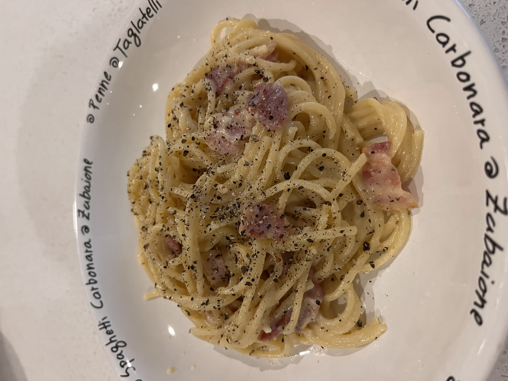

Carbonara

Description
Carbonara is one of the most delicious yet simple pasta recipes known to man. This dish is a perfect example of traditional Italian cuisine. Although it's known as a famous Roman dish, it actually has Neapolitan origins.
Ingredients
- 350g (12 oz) of spaghetti
- 200g (7oz)of guanciale
- 4 whole medium eggs (1 egg per serving)
- 100g (1 cup + 1 tablespoon) of grated Pecorino Romano cheese
- Ground black pepper
Steps
- Heat olive oil in a large skillet over medium heat; add guanciale (see Cook's Note). Cook, turning occasionally, until evenly browned and crispy, 5 to 10 minutes. Remove from heat and drain on paper towels.
- Bring a large pot of salted water to a boil. Cook spaghetti in the boiling water, stirring occasionally until tender yet firm to the bite, about 9 minutes. Drain and return to the pot. Let cool, stirring occasionally, about 5 minutes.
- Whisk eggs, 1/2 of the Pecorino Romano cheese, and some black pepper in a bowl until smooth and creamy.
- Pour egg mixture over pasta, stirring quickly, until creamy and slightly cooled. Stir in guanciale. Top with remaining Pecorino Romano cheese and more black pepper.